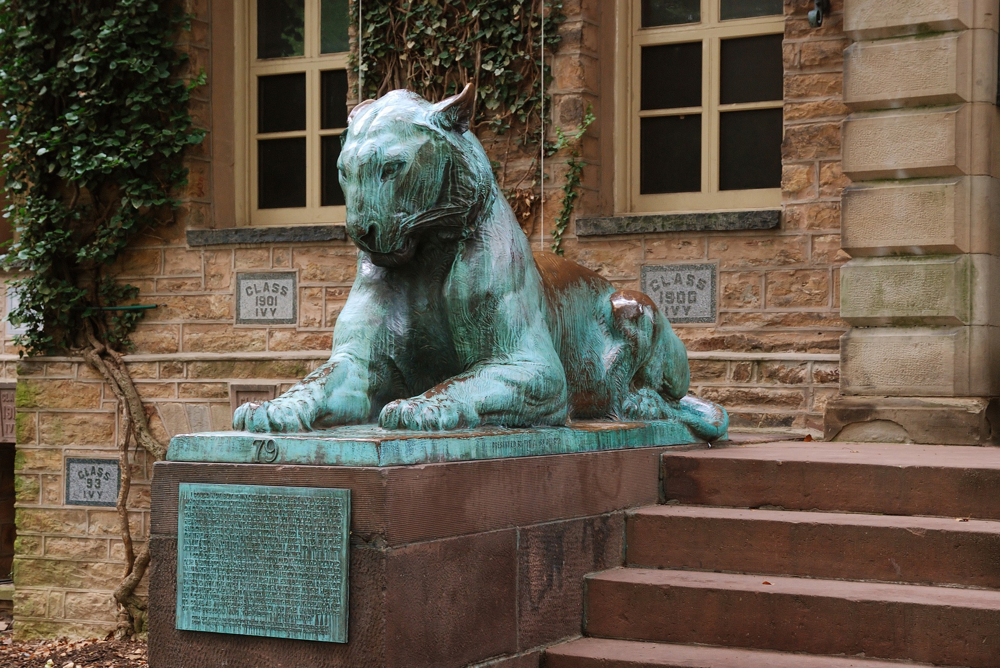
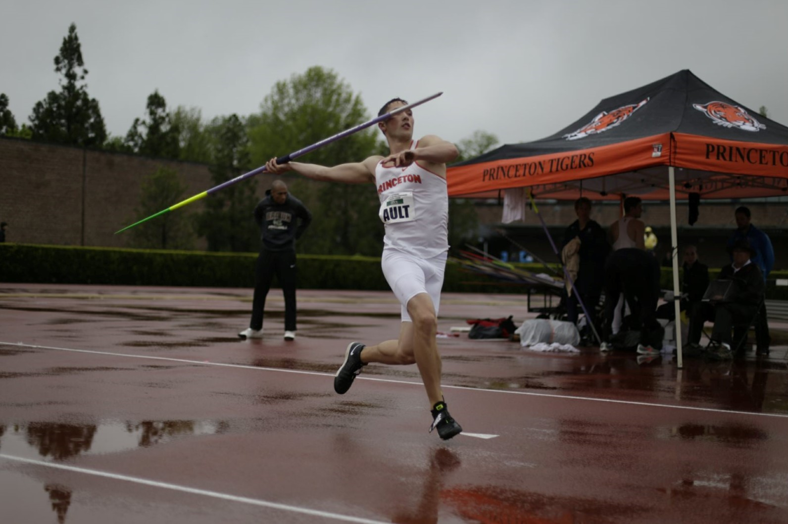

My Story
Education
I began studying computer science at Princeton University in 2018. Without a doubt, this has been one of the most edifying experiences in my life. For my junior independent work, I have been given the opportunity to work under Dr. Olga Russakovsky to increase privacy in surveillance cameras. This work deals with preventing CCTV, surveillance cameras, and traffic cameras from unjustly tracking individuals through their license plate. This system is a privacy-aware infrustructure aimed to put the choice of privacy back into the hands of the people.
Work History
During my time as a student, I have been fortunate enough to get experience in a wide array of topics. In the winter of 2019, I began working as a circulation assistant for the East Asian Library at Princeton University. This was an excellent experience since it required attention to detail to ensure the library ran well. I continued to work at the East Asian Library until Covid-19 demanded students to leave campus in the spring of 2020.
After my first year of studies, I gained more experience by working as a senior teacher at Engineering For Kids. In this position, I taught children aged 7-15 the principles of engineering, problem solving, and teamwork. Often this revolved around lego robotics, game design, and circuit design since these were my specialties as a computer science major.
During the summer of 2020, I was given the chance to showcase my skills as a research assistant for the Raphael Lab at Princeton University. I worked on utilizing a tumor migration recovery program called MACHINA to recover the geographic migration pattern of Covid-19 from a phylogenetic tree. After this, I correlated the recovered migration pattern to the top commercial flights by passenger volume. Overall, the project taught me how to work independently, how to problem solve, and how to leverage large amounts of data to answer important problems.
Finally, after my work at the Raphael Lab concluded, I began an internship at TCL working on image quality assessment. This project sought to utilize deep learning to perform no-reference image quality assessment (NR-IQA) which would allow real-time adjustment of parameters such as contrast, blur, etc. I worked from August to October of 2020 reading papers, creating reports, and implementing features. Ultimately, this opportunity was the catalyst for my interest in computer vision and taught me how to work and communicate remotely with team members from around the world.
Personal
Although my career aspirations are in computer science, I am not just a programmer. I am also a member of the varsity track and field team at Princeton University as a javelin thrower. I have been doing track for the last 14 years, and I am incredibly grateful to be given the opportunity to compete at the highest level for a Division I school. Being on the team has taught me hard work, discipline, and integrity because everyday teammates hold each other accountable to never stop striving for improvement. In the 2019 season, I qualified for NCAA regionals and placed third at the Ivy League championships.